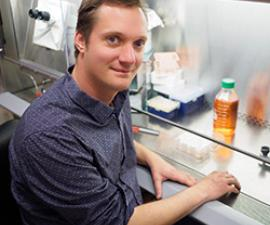
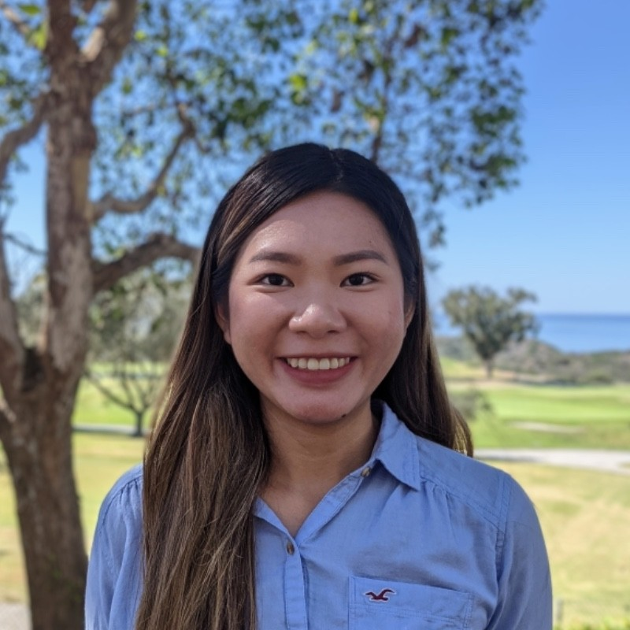
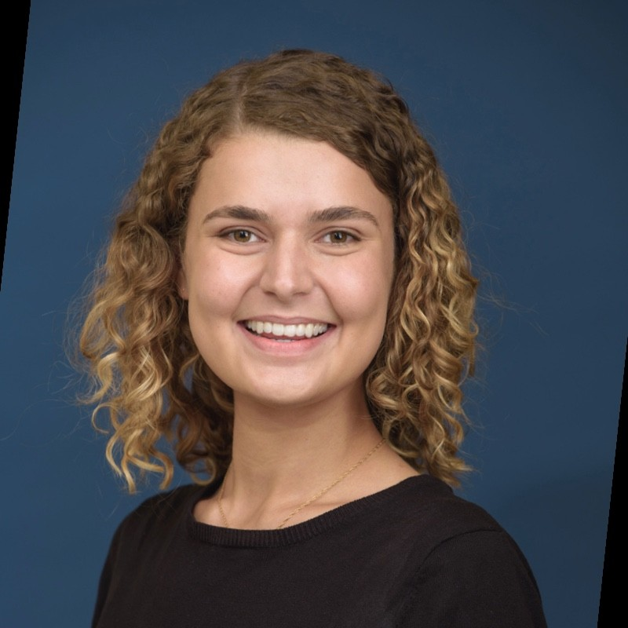
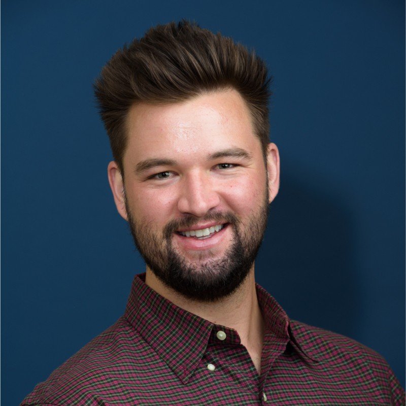

Dirk Hockemeyer

Associate Professor of Cell and Developmental Biology
Molecular and Cell Biology, UC Berkeley
Postdoctoral Fellow in Genetics (2007-2012)
Advisor: Dr. Rudolf Jaenisch, Whitehead Institute
Ph.D. in Molecular and Cell Biology (2002-2007)
Advisor: Dr. Titia de Lange, Rockefeller University
B.S. and M.S. in Biochemistry (1998-2002)
Advisor: Dr. Alfred Nordheim, Eberhard Karls University Tuebingen
Atul Preetham
M.S. in Biotechnology
University of San Francisco
BTech in Biotechnology
Vellore Institute of Technology
Research interests in the lab: Currently working at the Hockemeyer Lab at UC Berkeley. I use human Embryonic Stem Cells (hESCs) and Hematopoietic Stem and Progenitor Cells (HSPCs) as a model to understand more of telomere biology and the different subunits of the shelterin complex, along with its association with Telomere Biology Disorders (TBDs).
E-mail address: atulpreetham[at]berkeley.edu
Stella Tran

B.S. in Biochemistry, Minor in Microbiology
California State University, Long Beach
Research interests in the lab: I use human Embryonic Stem Cells (hESCs) as a model to understand more of telomere biology and its association with Telomere Biology Disorders (TBDs). My project is focused on the Protection of Telomeres 1 (POT1) protein which is an essential subunit of the shelterin telomere binding complex.
E-mail address: stellatran[at]berkeley.edu
Anna Horacek

Ph.D. Candidate in Molecular and Cell Biology
University of California, Berkeley
B.S. in Biology and Anthropology and Minor in Chemistry
University of Oregon
Research interests in the lab: Employing next-generation sequencing to study the role of disordered protein domains in DNA-protein interactions during stem cell development.
E-mail address: annahoracek[at]berkeley.edu
Carter Simington

Ph.D. Candidate in Molecular and Cell Biology
University of California, Berkeley
M.S. in Biochemistry and Molecular Biology
Johns Hopkins Bloomberg School of Public Health
B.S. in Biochemistry, Molecular and Cellular Biology
University of Arizona
Research interests in the lab:
E-mail address: carter_simington@berkeley.edu
Annika Martin
Ph.D. Candidate in Molecular and Cell Biology
University of California, Berkeley
B.S. in Biophysics
Bringham Young University
Research interests in the lab: I am developing new methods to pair telomere length analysis with single-cell lineage tracing to investigate high-resolution telomere dynamics during cellular differentiation.
E-mail address: annika_martin[at]berkeley.edu